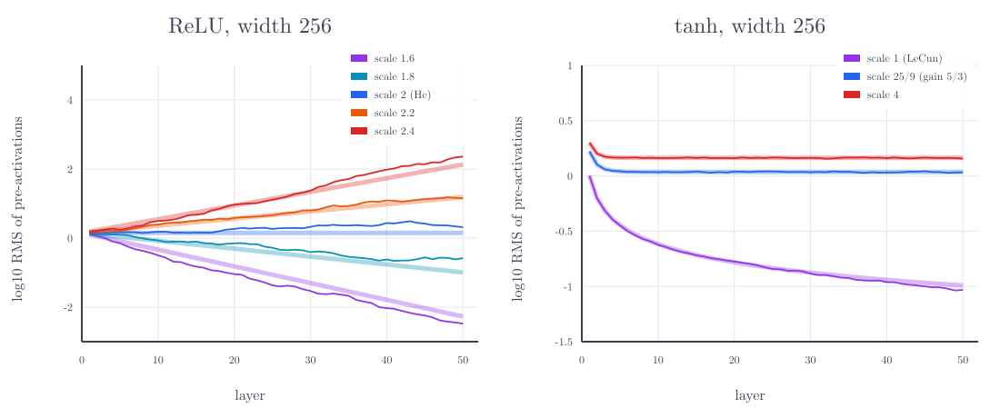
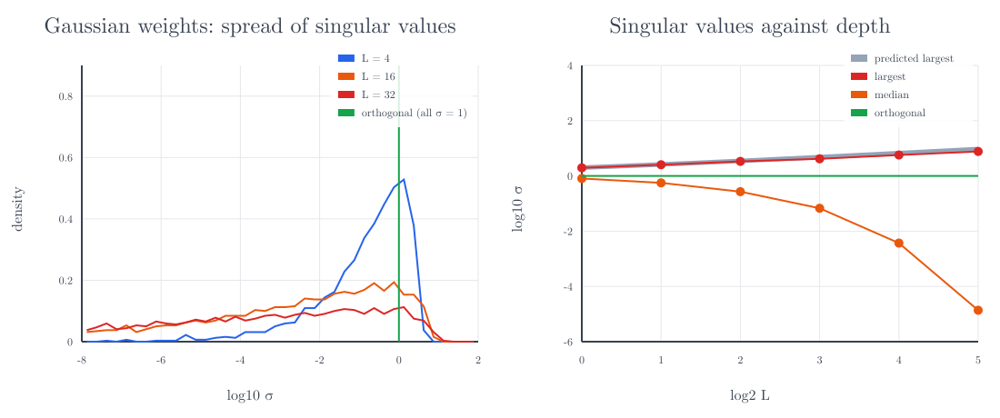
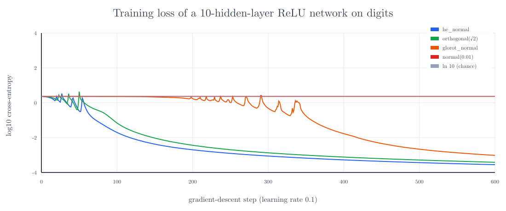

Variables and Initialisers: Keeping the Signal Alive Through Depth
Abstract
In an eager library a variable is a tensor updated in place, and an initialiser is a function that draws its first value. Most of what matters is in the
initialiser's scale. If weights have variance \(s/n_{\text{in}}\), each layer multiplies the variance of the signal by \(s\) times the activation's second-moment factor. Over \(L\)
layers that factor is raised to the power \(L\), so the signal vanishes or explodes unless it equals one. This report derives the Glorot, He and LeCun scales from that
requirement, along with the uniform and truncated-normal corrections. It checks the mean-field recursion for activations and gradients against 50-layer networks: tanh agrees to within 10%, and ReLU
to within the finite-width fluctuations. It also checks the Fuss–Catalan law for the singular values of a deep linear network's Jacobian (mean \(\sigma^4=L+1\)), against which
orthogonal weights are an exact isometry. On the digits data, a 10-hidden-layer ReLU network trained by gradient descent fits the training set with He or orthogonal weights. It
stays near chance for about 160 steps with Glorot weights, and never leaves chance with \(\mathcal N(0,0.01^2)\) weights, whose gradients are \(10^{-15}\). The library gained
nn::init::variance_scaling, nn::init::gain, nn::init::truncated_normal_std and nn::init::signal_propagation.
The problem
TensorFlow 1 variables are graph nodes that own a buffer, start uninitialised, persist across session runs and are set by running an initialiser subgraph
(Abadi et al., 2016). In datamunge::nn, as in PyTorch, a variable is an ordinary tensor that is updated in place, usually held in an nn::ParameterStore. An initialiser is a function
from a shape to a tensor. The mechanics are therefore simple. The substance is in the numbers an initialiser draws. A network that starts with the wrong scale may train slowly,
erratically or not at all, however good the optimiser.
This report replaces the original example examples/nn/0_foundations/0.1_tensors_graphs_sessions/variables_initializers.cpp. That example showed a variable's lifecycle,
wrote the common initialisers from random ops and checked their standard deviations. Those checks are kept here, and the report adds the theory behind the scales and its
consequences in deep networks.
The method
Variables
A variable is a tensor handle. Copying the handle aliases it, and in-place methods (add_, copy_, fill_) write through to the shared storage, so every alias sees the update.
Each write increments the storage's version counter, so autograd can detect a variable changed after it was saved for a backward pass. Updates to a parameter that requires gradients
are made under NoGradGuard, outside the tape. ParameterStore::clone() makes an independent deep copy, the counterpart of a second TensorFlow session with its own variables. A gradient
with respect to a variable is an ordinary nn::grad call.
One layer: the variance of a sum
Let a dense layer compute \(z_j=\sum_{i=1}^{n_{\text{in}}}w_{ij}h_i\) with independent zero-mean weights of variance \(v\), independent of the inputs. Then
If \(h=\phi(z')\) for the previous layer's pre-activation \(z'\sim\mathcal N(0,q)\), then \(\mathbb E[h^2]=\mathbb E[\phi(\sqrt q\,Z)^2]\). For the identity it is \(q\). For ReLU, half of a symmetric distribution survives, so it is \(q/2\).
Keeping \(\operatorname{Var}(z)=q\) therefore needs \(n_{\text{in}}v=1\) for linear layers (LeCun et al., 1998) and \(n_{\text{in}}v=2\) for ReLU (He et al., 2015). In the backward pass the
gradient with respect to \(h_i\) is \(\sum_jw_{ij}\,\partial\ell/\partial z_j\), a sum over \(n_{\text{out}}\) terms, so gradients keep their scale when \(n_{\text{out}}v\) equals the same constant. Glorot and Bengio (2010)
compromise with \(v=2/(n_{\text{in}}+n_{\text{out}})\). All of these are \(v=s/n\), with \(n\) the fan-in, the fan-out or their mean and \(s\) the square of a gain (\(\sqrt2\) for ReLU). That is what
nn::init::variance_scaling(s, mode, distribution) draws, and nn::init::gain gives the usual gains.
Matching the variance with bounded distributions
A uniform \(U(-a,a)\) has variance \(a^2/3\), so \(a=\sqrt{3v}\). A normal truncated at two standard deviations is narrower than the normal it came from. For \(Z\sim\mathcal N(0,1)\) conditioned on \(\lvert Z\rvert\le b\), integrating \(z^2\varphi(z)\) by parts with \(\varphi'(z)=-z\varphi(z)\) gives
whose square root is 0.87962566 for \(b=2\). Keras and variance_scaling divide the truncated draw by this factor so that its variance is exactly \(v\). The library's
truncated_normal(stddev) initialiser does not, so its actual standard deviation is \(0.88\times\)stddev.
Depth: the mean-field recursion
Through \(L\) layers of width \(n\) with \(v=s/n\), write \(q_l\) for the variance of the layer-\(l\) pre-activations. As \(n\to\infty\) the pre-activations become Gaussian, and the one-layer result becomes a deterministic map (Poole et al., 2016):
where \(g_l\) is the gradient with respect to \(z_l\). For ReLU both factors are \(s/2\), so activations and gradients scale like \((s/2)^{l/2}\) in RMS: they stay level only at the He value \(s=2\), and a 10% error in \(s\) compounds to a factor \(1.1^{25}\approx11\) over 50 layers. For tanh the map has a stable fixed point \(q^\ast>0\) when \(s>1\), so the forward signal settles to a constant for any such \(s\). The gradient factor at the fixed point, \(\chi^\ast\), decides whether gradients grow (\(\chi^\ast>1\), the chaotic phase) or shrink (\(\chi^\ast<1\), the ordered phase) (Schoenholz et al., 2017). The forward signal alone cannot reveal which.
Beyond the variance: the singular values of the Jacobian
The mean field tracks the average squared norm. The network's input–output Jacobian also matters, because its singular values say how differently directions are stretched. For a deep linear
network \(J=W_1\cdots W_L\) with Gaussian \(W_l\) of variance \(1/n\), the squared singular values of \(J\) follow the Fuss–Catalan distribution as \(n\to\infty\)
(Penson and Życzkowski, 2011). Its moments are \(\frac{1}{Lk+1}\binom{(L+1)k}{k}\), so the mean of \(\sigma^2\) is 1, the mean of \(\sigma^4\) is \(L+1\), and the support ends at
\(\sigma^2=(L+1)^{L+1}/L^L\approx e(L+1)\). On average the norm is preserved, but the spread grows with depth: a few directions are stretched by a factor of order \(\sqrt L\), and most
are crushed. Orthogonal \(W_l\) give \(J^\top J=I\) exactly, so every singular value is 1 at any depth, which is dynamical isometry (Saxe et al., 2014; Pennington et al., 2017).
nn::init::orthogonal draws such matrices uniformly by the sign-corrected QR method (Mezzadri, 2007).
Simple examples
A variable's life, and the initialisers' statistics
#include <dm/dm.hpp>
namespace nn = dm::nn;
namespace init = dm::nn::init;
using nn::Tensor;
int main() {
// A variable's life: no value, a value, in-place updates seen through every alias, an independent clone.
std::print("| step | code | w | alias of w |\n| :--- | :--- | :--- | :--- |\n");
Tensor w;
std::string why;
try { (void)w.to_vector<float>(); } catch (const std::exception& e) { why = e.what(); }
std::print("| declared | `Tensor w;` | undefined; reading throws \"{}\" | |\n", why);
w = nn::tensor({{1, 2}, {3, 4}});
const Tensor alias = w;
std::print("| assigned | `w = tensor({{{{1, 2}}, {{3, 4}}}})` | {} | {} |\n", w.values_str(), alias.values_str());
w.add_(nn::full({2, 2}, 1.0));
std::print("| AssignAdd | `w.add_(full({{2, 2}}, 1))` | {} | {} |\n", w.values_str(), alias.values_str());
w.copy_(w * 10.0);
std::print("| Assign | `w.copy_(w * 10)` | {} | {} |\n", w.values_str(), alias.values_str());
w.copy_(nn::concat({nn::slice_axis(w, 0, 0, 1), nn::tensor({{-1, -2}})}, 0));
std::print("| row update | `w.copy_(concat({{row 0, {{{{-1, -2}}}}}}, 0))` | {} | {} |\n", w.values_str(), alias.values_str());
nn::ParameterStore store(1);
store.set("w", w);
nn::ParameterStore other = store.clone();
{
nn::NoGradGuard no_grad;
other.at("w").add_(nn::full({2, 2}, 100.0));
}
std::print("| clone, then add 100 to the clone | `store.clone()` | {} | clone: {} |\n", store.at("w").values_str(), other.at("w").values_str());
Tensor v = nn::tensor({1, 2, 3}).requires_grad_();
{
nn::NoGradGuard no_grad;
v.add_(nn::tensor({10, 10, 10}));
}
std::print("| gradient with respect to a variable | `grad(sum(v²), {{v}})`, v = {} | {} | |\n", v.values_str(), nn::grad(nn::sum(nn::square(v)), {v})[0].values_str());
std::vector<std::vector<float>> seeded;
for (int run = 0; run < 2; ++run) {
nn::Generator g(123);
seeded.push_back(nn::normal({3}, 0.0, 1.0, g).to_vector<float>());
}
std::print("| two runs seeded with 123 | `normal({{3}}, 0, 1, Generator(123))` | [{:.5f}, {:.5f}, {:.5f}] | [{:.5f}, {:.5f}, {:.5f}] |\n\n",
seeded[0][0], seeded[0][1], seeded[0][2], seeded[1][0], seeded[1][1], seeded[1][2]);
// Every initializer of a [256, 128] weight against its target standard deviation.
const std::int64_t fin = 256, fout = 128;
nn::Generator g(7);
struct Row { std::string name; nn::Initializer f; double target; };
const double glorot = std::sqrt(2.0 / (fin + fout)), he = std::sqrt(2.0 / fin), lecun = std::sqrt(1.0 / fin);
const std::vector<Row> rows = {
{"uniform(0.05)", init::uniform(0.05), 0.05 / std::sqrt(3.0)},
{"normal(0.02)", init::normal(0.02), 0.02},
{"truncated_normal(0.02)", init::truncated_normal(0.02), 0.02 * init::truncated_normal_std()},
{"glorot_uniform()", init::glorot_uniform(), glorot},
{"glorot_normal()", init::glorot_normal(), glorot},
{"he_uniform()", init::he_uniform(), he},
{"he_normal()", init::he_normal(), he},
{"lecun_normal()", init::lecun_normal(), lecun},
{"variance_scaling(1, FanIn, TruncatedNormal)", init::variance_scaling(1, init::FanMode::FanIn, init::Distribution::TruncatedNormal), lecun},
{"variance_scaling(2, FanAvg, Uniform)", init::variance_scaling(2, init::FanMode::FanAvg, init::Distribution::Uniform), std::sqrt(2.0 / 192)},
{"orthogonal()", init::orthogonal(), 1.0 / std::sqrt(double(fin))},
};
std::print("| initializer | target std | sample std / target | sample mean / standard error | largest \\|w\\| / target |\n| :--- | ---: | ---: | ---: | ---: |\n");
for (const auto& r : rows) {
const Tensor t = r.f({fin, fout}, nn::DType::Float64, g);
const double mean = nn::mean(t).item(), sd = std::sqrt(nn::mean(nn::square(t - mean)).item());
std::print("| `{}` | {:.5f} | {:.4f} | {:+.2f} | {:.2f} |\n", r.name, r.target, sd / r.target, mean / (r.target / std::sqrt(double(t.numel()))),
nn::max(nn::abs(t)).item() / r.target);
}
const Tensor q = init::orthogonal()({fin, fout}, nn::DType::Float64, g);
std::print("\nOrthogonal [256, 128]: largest |QᵀQ − I| = {:.1e}. Truncated-normal factor √(1 − 4φ(2)/(2Φ(2) − 1)) = {:.8f}; "
"gains: tanh {:.4f}, relu {:.4f}, leaky_relu(0.2) {:.4f}, selu {:.2f}.\n",
nn::max(nn::abs(nn::matmul(nn::transpose(q), q) - nn::eye(fout, nn::DType::Float64))).item(), init::truncated_normal_std(),
init::gain("tanh"), init::gain("relu"), init::gain("leaky_relu", 0.2), init::gain("selu"));
}| step | code | w | alias of w |
|---|---|---|---|
| declared | Tensor w; | undefined; reading throws "Tensor: use of an undefined tensor" | |
| assigned | w = tensor({{1, 2}, {3, 4}}) | [[1, 2], [3, 4]] | [[1, 2], [3, 4]] |
| AssignAdd | w.add_(full({2, 2}, 1)) | [[2, 3], [4, 5]] | [[2, 3], [4, 5]] |
| Assign | w.copy_(w * 10) | [[20, 30], [40, 50]] | [[20, 30], [40, 50]] |
| row update | w.copy_(concat({row 0, {{-1, -2}}}, 0)) | [[20, 30], [-1, -2]] | [[20, 30], [-1, -2]] |
| clone, then add 100 to the clone | store.clone() | [[20, 30], [-1, -2]] | clone: [[120, 130], [99, 98]] |
| gradient with respect to a variable | grad(sum(v²), {v}), v = [11, 12, 13] | [22, 24, 26] | |
| two runs seeded with 123 | normal({3}, 0, 1, Generator(123)) | [1.77053, -0.34268, 0.86112] | [1.77053, -0.34268, 0.86112] |
| initializer | target std | sample std / target | sample mean / standard error | largest |w| / target |
|---|---|---|---|---|
uniform(0.05) | 0.02887 | 1.0023 | -1.28 | 1.73 |
normal(0.02) | 0.02000 | 1.0018 | +2.16 | 4.32 |
truncated_normal(0.02) | 0.01759 | 1.0011 | -1.31 | 2.27 |
glorot_uniform() | 0.07217 | 0.9976 | +1.25 | 1.73 |
glorot_normal() | 0.07217 | 0.9969 | -0.67 | 4.69 |
he_uniform() | 0.08839 | 0.9984 | -1.31 | 1.73 |
he_normal() | 0.08839 | 0.9941 | +0.47 | 3.88 |
lecun_normal() | 0.06250 | 0.9961 | -1.06 | 4.57 |
variance_scaling(1, FanIn, TruncatedNormal) | 0.06250 | 1.0045 | +0.89 | 2.27 |
variance_scaling(2, FanAvg, Uniform) | 0.10206 | 1.0022 | -0.47 | 1.73 |
orthogonal() | 0.06250 | 1.0000 | -0.75 | 4.00 |
Orthogonal [256, 128]: largest QᵀQ − I = 2.4e-15. Truncated-normal factor √(1 − 4φ(2)/(2Φ(2) − 1)) = 0.87962566; gains: tanh 1.6667, relu 1.4142, leaky_relu(0.2) 1.3868, selu 0.75.
The first table is the original example's lifecycle. A declared Tensor has no value, and reading it throws. After assignment, add_ and copy_ change the
buffer that both w and its alias share. A row update rebuilds the matrix from a slice of itself and copies it back in. The clone in a second ParameterStore changes while the
original stays at \([[20,30],[-1,-2]]\). The gradient of \(\sum v^2\) at \(v=(11,12,13)\) is \(2v=(22,24,26)\). Two generators seeded with 123 draw the same numbers.
In the second table every initialiser's sample standard deviation is within 0.6% of its target, and every sample mean is within 2.2 standard errors of zero. The other
column shows each distribution's shape. Uniform draws reach at most \(\sqrt3=1.73\) target standard deviations. Truncated normals stop at \(2/0.8796=2.27\), the two-sigma truncation
expressed in units of the narrower standard deviation. Normals run to about 4 to 5. truncated_normal(0.02) has a target of \(0.02\times0.8796=0.0176\), not 0.02, while
variance_scaling(1, FanIn, TruncatedNormal) hits \(1/\sqrt{256}\) because it applies the correction. The orthogonal matrix's columns are orthonormal to \(2.4\times10^{-15}\). That
forces its mean square to be exactly \(128/(256\cdot128)=1/256\), which is why its ratio is 1.0000.
Checking the theory
Signals and gradients through 50 layers
nn::init::signal_propagation pushes a batch of 512 standard-normal inputs through a fresh bias-free network and records the RMS of each layer's pre-activations, and of
the gradients for a loss \(\sum\text{output}\odot r\) with random \(r\). The networks below have 50 layers of width 256 and normal weights with variance \(s/256\). The mean-field
predictions come from the recursion above, with the tanh expectations computed by quadrature.
#include <dm/dm.hpp>
namespace nn = dm::nn;
namespace init = dm::nn::init;
using nn::Tensor;
// E[phi(sqrt(q) Z)^2] for Z ~ N(0, 1), by the trapezoid rule on [-10, 10].
template <class Phi> double second_moment(double q, Phi phi) {
const int m = 4000;
const double h = 20.0 / m;
double s = 0;
for (int i = 0; i <= m; ++i) {
const double z = -10 + i * h, f = phi(std::sqrt(q) * z);
s += (i == 0 || i == m ? 0.5 : 1.0) * f * f * std::exp(-0.5 * z * z);
}
return s * h / std::sqrt(2 * std::numbers::pi);
}
int main() {
std::filesystem::create_directories("build");
const std::int64_t width = 256, depth = 50, batch = 512;
const std::vector<std::int64_t> widths(depth + 1, width);
nn::Generator gen(4);
const auto relu = [](const Tensor& x) { return nn::relu(x); };
const auto tanh_ = [](const Tensor& x) { return nn::tanh(x); };
struct Curve { std::string label; double scale; bool is_relu; std::vector<double> measured, predicted, backward; };
std::vector<Curve> curves = {{"ReLU, scale 1.6", 1.6, true}, {"ReLU, scale 1.8", 1.8, true}, {"ReLU, scale 2 (He)", 2.0, true},
{"ReLU, scale 2.2", 2.2, true}, {"ReLU, scale 2.4", 2.4, true},
{"tanh, scale 1 (LeCun)", 1.0, false}, {"tanh, scale 25/9 (gain 5/3)", 25.0 / 9, false}, {"tanh, scale 4", 4.0, false}};
std::print("| network | forward RMS, layer 1 | layer 10 | layer 50 | mean-field layer 50 | gradient RMS, layer 1 / layer 50 | mean-field gradient ratio |\n");
std::print("| :--- | ---: | ---: | ---: | ---: | ---: | ---: |\n");
for (auto& c : curves) {
const auto sp = init::signal_propagation(widths, init::variance_scaling(c.scale, init::FanMode::FanIn, init::Distribution::Normal),
c.is_relu ? std::function<Tensor(const Tensor&)>(relu) : std::function<Tensor(const Tensor&)>(tanh_), batch, gen);
c.measured = sp.forward_rms, c.backward = sp.backward_rms;
// Mean field: q_1 = scale (unit-variance inputs), q_{l+1} = scale E[phi(z_l)^2].
// Gradients: Var(g_{l-1}) = scale E[phi'(z_{l-1})^2] Var(g_l), so the ratio from layer 50 back to layer 1 is the
// square root of the product of those factors over layers 1..49.
double q = c.scale, log_chi = 0;
for (std::int64_t l = 0; l < depth; ++l) {
c.predicted.push_back(std::sqrt(q));
if (l < depth - 1)
log_chi += std::log(c.scale * (c.is_relu ? 0.5 : second_moment(q, [](double z) { return 1.0 / (std::cosh(z) * std::cosh(z)); })));
q = c.scale * (c.is_relu ? 0.5 * q : second_moment(q, [](double z) { return std::tanh(z); }));
}
std::print("| {} | {:.3f} | {:.3f} | {:.3g} | {:.3g} | {:.3g} | {:.3g} |\n", c.label, c.measured[0], c.measured[9], c.measured[49], c.predicted[49],
c.backward.front() / c.backward.back(), std::exp(0.5 * log_chi));
}
// The tanh fixed points q* = scale E[tanh(sqrt(q*) Z)^2], by iteration.
for (double s : {25.0 / 9, 4.0}) {
double q = 1;
for (int i = 0; i < 2000; ++i) q = s * second_moment(q, [](double z) { return std::tanh(z); });
std::print("\nTanh fixed point for scale {:.3f}: RMS √q* = {:.4f}.", s, std::sqrt(q));
}
std::print("\n");
const dm::graphics::RGB cols[] = {{147, 51, 234}, {8, 145, 178}, {37, 99, 235}, {234, 88, 12}, {220, 38, 38}};
auto panel = [&](bool is_relu, const std::string& title, double lo, double hi) {
auto p = dm::graphics::RPlot::create();
int k = 0;
for (const auto& c : curves) {
if (c.is_relu != is_relu) continue;
std::vector<double> layer, m, pr;
for (std::int64_t l = 0; l < depth; ++l) layer.push_back(double(l + 1)), m.push_back(std::log10(c.measured[l])), pr.push_back(std::log10(c.predicted[l]));
const auto col = cols[is_relu ? k : (k == 0 ? 0 : k == 1 ? 2 : 4)];
p.lines(layer, pr, "", dm::graphics::RGB{col.r, col.g, col.b, 0.35}, 5.0);
p.lines(layer, m, c.label.substr(c.label.find(", ") + 2), col, 1.8);
++k;
}
p.x_limits(0, 52).y_limits(lo, hi).title(title).x_label("layer").y_label("log10 RMS of pre-activations");
return p;
};
auto fig = dm::graphics::RLayout::create(1, 2);
fig.add(panel(true, "ReLU, width 256", -3, 5));
fig.add(panel(false, "tanh, width 256", -1.5, 1));
fig.size(1100, 460).fit_panels();
fig.save("build/variables_initializers_signal.svg");
}| network | forward RMS, layer 1 | layer 10 | layer 50 | mean-field layer 50 | gradient RMS, layer 1 / layer 50 | mean-field gradient ratio |
|---|---|---|---|---|---|---|
| ReLU, scale 1.6 | 1.268 | 0.316 | 0.00332 | 0.00534 | 0.0044 | 0.00422 |
| ReLU, scale 1.8 | 1.339 | 0.856 | 0.263 | 0.102 | 0.12 | 0.0757 |
| ReLU, scale 2 (He) | 1.405 | 1.527 | 2.07 | 1.41 | 0.87 | 1 |
| ReLU, scale 2.2 | 1.486 | 2.450 | 14.1 | 15.3 | 10.1 | 10.3 |
| ReLU, scale 2.4 | 1.543 | 3.137 | 229 | 135 | 139 | 87.1 |
| tanh, scale 1 (LeCun) | 1.005 | 0.238 | 0.093 | 0.102 | 0.115 | 0.121 |
| tanh, scale 25/9 (gain 5/3) | 1.663 | 1.081 | 1.08 | 1.09 | 82.7 | 79.7 |
| tanh, scale 4 | 1.998 | 1.450 | 1.43 | 1.46 | 1.69e+03 | 1.6e+03 |
Tanh fixed point for scale 2.778: RMS √q* = 1.0856. Tanh fixed point for scale 4.000: RMS √q* = 1.4565.

ReLU. The variance scale decides everything, as the recursion says. At \(s=2\) the RMS stays level, ending at 2.07 against a prediction of 1.41. At \(s=1.6\) it falls by a factor of about 380 over 50 layers, and at \(s=2.4\) it grows by about 150, against predicted factors of 237 and 87. The gradients follow the same law in reverse: the gradient at layer 1 is 0.0044 times that at layer 50 for \(s=1.6\) (predicted 0.0042) and 139 times for \(s=2.4\) (predicted 87). The measured curves wander about their straight-line predictions by up to a factor of 2.6. That is the finite-width effect, since each layer multiplies the squared norm by a random factor whose log has variance of order \(1/n\). Over \(L\) layers these add up to a log-variance proportional to \(L/n\) (Hanin and Rolnick, 2018), here 50/256.
tanh. The mean field is nearly exact. For \(s=1\) (LeCun) the signal decays slowly towards zero, like a power of the depth rather than exponentially, to 0.093 at layer 50 against 0.102 predicted. For \(s=25/9\) (the conventional gain 5/3) and \(s=4\) it settles within a few layers at the fixed points 1.086 and 1.457, measured 1.08 and 1.43. Yet these two forward-stable networks have very different gradients. With gain 5/3 the gradient at layer 1 is 83 times that at layer 50, and with \(s=4\) about 1700 times, matching the predicted \(\prod\chi_l^{1/2}\) of 80 and 1600. Both are in the chaotic phase, \(\chi^\ast>1\). A stable forward signal says nothing about the backward one, and only the gradient factor shows it.
The spectrum of a deep linear Jacobian
The next program multiplies \(L\) random \(128\times128\) matrices, Gaussian with variance \(1/128\) or orthogonal, and computes the singular values of the product, pooled over 10 draws.
#include <dm/dm.hpp>
namespace nn = dm::nn;
namespace init = dm::nn::init;
using nn::Tensor;
int main() {
std::filesystem::create_directories("build");
const auto F64 = nn::DType::Float64;
const std::int64_t n = 128;
const int draws = 10;
nn::Generator gen(9);
// Singular values of the input-output Jacobian J = W_1 W_2 ... W_L of a deep linear network.
auto spectrum = [&](const nn::Initializer& f, int L) {
Tensor J = nn::eye(n, F64);
for (int l = 0; l < L; ++l) J = nn::matmul(J, f({n, n}, F64, gen));
return nn::svd(J, false).s.to_vector<double>(); // descending
};
const auto gauss = init::lecun_normal(); // variance 1/n, so E||Jx||^2 = ||x||^2
const auto orth = init::orthogonal();
std::print("| depth L | mean σ² (theory 1) | mean σ⁴ | theory L + 1 | largest σ | edge √((L+1)^(L+1)/L^L) | median σ | share of σ below 0.01 | orthogonal: largest \\|σ − 1\\| |\n");
std::print("| ---: | ---: | ---: | ---: | ---: | ---: | ---: | ---: | ---: |\n");
std::vector<double> Ls, smax, edge, smed;
std::vector<std::vector<double>> pooled;
for (int L : {1, 2, 4, 8, 16, 32}) {
double m2 = 0, m4 = 0, top = 0, orth_dev = 0;
std::vector<double> all;
for (int d = 0; d < draws; ++d) {
const auto s = spectrum(gauss, L);
for (double v : s) m2 += v * v, m4 += v * v * v * v, all.push_back(v);
top += s.front();
for (double v : spectrum(orth, L)) orth_dev = std::max(orth_dev, std::abs(v - 1));
}
const double count = double(draws * n);
m2 /= count, m4 /= count, top /= draws;
std::ranges::sort(all);
const double e = std::sqrt(std::pow(L + 1.0, L + 1.0) / std::pow(double(L), double(L)));
const double tiny = double(std::ranges::count_if(all, [](double v) { return v < 0.01; })) / count;
Ls.push_back(std::log2(L)), smax.push_back(std::log10(top)), edge.push_back(std::log10(e));
smed.push_back(std::log10(all[all.size() / 2]));
std::print("| {} | {:.3f} | {:.2f} | {} | {:.3f} | {:.3f} | {:.2g} | {:.3f} | {:.1e} |\n", L, m2, m4, L + 1, top, e, all[all.size() / 2], tiny, orth_dev);
if (L == 4 || L == 16 || L == 32) pooled.push_back(all);
}
// Left: density of log10 singular values for L = 4, 16, 32. Right: largest (mean over draws) and median
// against depth, with the predicted edge; orthogonal stays at 1.
const dm::graphics::RGB c3[] = {{37, 99, 235}, {234, 88, 12}, {220, 38, 38}};
const char* names[] = {"L = 4", "L = 16", "L = 32"};
auto left = dm::graphics::RPlot::create();
const double lo = -8, hi = 2, bw = 0.25;
for (std::size_t k = 0; k < pooled.size(); ++k) {
std::vector<double> centre, density;
for (double b = lo; b < hi - 1e-9; b += bw) {
double count = 0;
for (double v : pooled[k]) { const double lv = std::log10(v); count += lv >= b && lv < b + bw; }
centre.push_back(b + bw / 2), density.push_back(count / (bw * double(pooled[k].size())));
}
left.lines(centre, density, names[k], c3[k], 2.0);
}
left.lines({0.0, 0.0}, {0.0, 0.9}, "orthogonal (all σ = 1)", dm::graphics::RGB{22, 163, 74}, 2.0);
left.x_limits(lo, hi).y_limits(0, 0.9).title("Gaussian weights: spread of singular values").x_label("log10 σ").y_label("density");
auto right = dm::graphics::RPlot::create();
right.lines(Ls, edge, "predicted largest", dm::graphics::RGB{148, 163, 184}, 5.0);
right.lines(Ls, smax, "largest", c3[2], 2.0).points(Ls, smax, "", c3[2], 5.0);
right.lines(Ls, smed, "median", c3[1], 2.0).points(Ls, smed, "", c3[1], 5.0);
right.lines({0.0, 5.0}, {0.0, 0.0}, "orthogonal", dm::graphics::RGB{22, 163, 74}, 2.0);
right.x_limits(0, 5).y_limits(-6, 4).title("Singular values against depth").x_label("log2 L").y_label("log10 σ");
auto fig = dm::graphics::RLayout::create(1, 2);
fig.add(left);
fig.add(right);
fig.size(1100, 460).fit_panels();
fig.save("build/variables_initializers_isometry.svg");
}| depth L | mean σ² (theory 1) | mean σ⁴ | theory L + 1 | largest σ | edge √((L+1)(L+1)/LL) | median σ | share of σ below 0.01 | orthogonal: largest |σ − 1| |
|---|---|---|---|---|---|---|---|---|
| 1 | 1.002 | 2.02 | 2 | 1.964 | 2.000 | 0.81 | 0.008 | 1.2e-15 |
| 2 | 0.995 | 2.99 | 3 | 2.538 | 2.598 | 0.56 | 0.042 | 1.2e-15 |
| 4 | 0.987 | 5.05 | 5 | 3.361 | 3.494 | 0.27 | 0.146 | 1.1e-15 |
| 8 | 0.971 | 8.37 | 9 | 4.163 | 4.805 | 0.067 | 0.336 | 1.8e-15 |
| 16 | 1.018 | 18.20 | 17 | 5.713 | 6.697 | 0.0037 | 0.558 | 2.2e-15 |
| 32 | 1.002 | 41.12 | 33 | 7.682 | 9.399 | 1.4e-05 | 0.728 | 2.3e-15 |

Gaussian weights. The mean of \(\sigma^2\) stays within 3% of 1 at every depth, so the network preserves the norm on average, as the variance argument promised. The spread grows with depth as the Fuss–Catalan law predicts. The mean of \(\sigma^4\) is 2.02, 2.99, 5.05, 8.37 and 18.20 for \(L=1\), 2, 4, 8 and 16, against \(L+1\); it is dominated by the few largest values, so with 1280 pooled singular values it scatters by up to 10% about the limit. The largest singular value is within 15% of the edge \(\sqrt{(L+1)^{L+1}/L^L}\) over the same range, and falls further below it as \(L\) grows. Meanwhile the median falls from 0.81 to 0.0037, and the share of directions shrunk by more than a factor of 100 grows from 0.8% to 56%. At \(L=32\) the measured spectrum departs from the limit: \(\sigma^4\) averages 41 instead of 33, driven by a few large values, and the largest singular value is 18% below the edge. The law holds as the width grows with the depth fixed, and here the depth is a quarter of the width. A deep Gaussian network thus passes a few directions through amplified and crushes most of the rest, even though its average norm is right.
Orthogonal weights. Every singular value equals 1 to within \(3\times10^{-15}\) at every depth, a perfectly conditioned Jacobian. For linear networks this exact isometry is what orthogonal initialisation buys. With nonlinearities it holds only approximately, near the fixed point (Pennington et al., 2017).
A dataset: training a deep network on digits
The digits data (Alpaydin and Kaynak, 1998) give 1797 handwritten digits as \(8\times8\) images with grey levels 0 to 16. Scale the pixels to \([0,1]\), centre them, train on the first 480 (a subset that keeps the run short) and test on the last 360. The network has ten hidden ReLU layers of width 64 and a linear output layer, with no biases. It is trained by 600 steps of plain gradient descent with learning rate 0.1 on the full training set. Gradient descent, unlike Adam, does not rescale small gradients, so it shows what the initialisation hands it.
#include <dm/dm.hpp>
namespace nn = dm::nn;
namespace init = dm::nn::init;
using nn::Tensor;
int main() {
std::filesystem::create_directories("build");
const auto F64 = nn::DType::Float64;
// 1797 digits, 64 pixels scaled to [0, 1] and centred; the first 480 train, the last 360 test.
const auto digits = dm::datasets::digits();
const std::int64_t n = 1797, d = 64, n_train = 480, n_test = 360;
std::vector<double> v(static_cast<std::size_t>(n * d));
for (std::int64_t j = 0; j < d; ++j) {
const auto c = digits.get_column<double>(std::format("pixel_{}", j)).values();
const double m = std::accumulate(c.begin(), c.end(), 0.0) / n / 16.0;
for (std::int64_t i = 0; i < n; ++i) v[i * d + j] = c[i] / 16.0 - m;
}
const auto label = digits.get_column<double>("digit").values();
const Tensor X = nn::from_vector(v, {n, d});
const Tensor y = nn::cast(nn::from_vector(label, {n}), nn::DType::Int64);
const Tensor Xtr = nn::slice(X, {0, 0}, {n_train, d}), Xte = nn::slice(X, {n - n_test, 0}, {n_test, d});
const Tensor ytr = nn::slice(y, {0}, {n_train}), yte = nn::slice(y, {n - n_test}, {n_test});
// Ten hidden ReLU layers of width 64 and a linear output layer, no biases, trained by plain gradient descent.
const int hidden = 10, steps = 600;
const double lr = 0.1;
struct Run { std::string name; nn::Initializer f; std::vector<double> loss; double test_acc{0}, first_grad{0}, last_grad{0}; };
std::vector<Run> runs = {{"he_normal", init::he_normal()},
{"orthogonal(√2)", init::orthogonal(init::gain("relu"))},
{"glorot_normal", init::glorot_normal()},
{"normal(0.01)", init::normal(0.01)}};
for (auto& run : runs) {
nn::ParameterStore store(5, F64);
std::vector<Tensor> W;
for (int l = 0; l <= hidden; ++l) W.push_back(store.get(std::format("W{}", l), {d, l == hidden ? 10 : d}, run.f));
nn::Optimizer opt(store, lr, {.kind = nn::OptimizerKind::Sgd});
auto forward = [&](const Tensor& x) {
Tensor h = x;
for (int l = 0; l < hidden; ++l) h = nn::relu(nn::matmul(h, W[l]));
return nn::matmul(h, W[hidden]);
};
for (int s = 0; s < steps; ++s) {
const Tensor loss = nn::sparse_softmax_cross_entropy(forward(Xtr), ytr);
const auto g = nn::grad({loss}, W);
if (s == 0) {
run.first_grad = std::sqrt(nn::mean(nn::square(g.front())).item());
run.last_grad = std::sqrt(nn::mean(nn::square(g[hidden - 1])).item());
}
opt.step(g);
run.loss.push_back(loss.item());
}
nn::NoGradGuard no_grad;
run.test_acc = nn::mean(nn::cast(nn::equal(nn::argmax(forward(Xte), -1), yte), F64)).item();
}
std::print("| initializer | weight std, hidden layer | gradient RMS at step 0: first layer | last hidden layer | loss at step 0 | step 100 | step 200 | step 300 | step 600 | test accuracy |\n");
std::print("| :--- | ---: | ---: | ---: | ---: | ---: | ---: | ---: | ---: | ---: |\n");
const double stds[] = {std::sqrt(2.0 / d), std::sqrt(2.0 / d), std::sqrt(1.0 / d), 0.01};
for (std::size_t k = 0; k < runs.size(); ++k) {
const auto& r = runs[k];
std::print("| `{}` | {:.4f} | {:.2e} | {:.2e} | {:.4f} | {:.4f} | {:.4f} | {:.4f} | {:.4f} | {:.1f}% |\n", r.name, stds[k], r.first_grad, r.last_grad, r.loss[0], r.loss[99], r.loss[199], r.loss[299], r.loss.back(), 100 * r.test_acc);
}
int left_chance = -1;
for (int s = 0; s < steps && left_chance < 0; ++s) if (runs[2].loss[s] < 0.9 * std::log(10.0)) left_chance = s + 1;
std::print("\nln 10 = {:.4f}, the loss of a uniform prediction over the 10 digits. Glorot's loss first falls 10% below it at step {}.\n",
std::log(10.0), left_chance);
auto plot = dm::graphics::RPlot::create();
const dm::graphics::RGB cols[] = {{37, 99, 235}, {22, 163, 74}, {234, 88, 12}, {220, 38, 38}};
std::vector<double> step;
for (int s = 1; s <= steps; ++s) step.push_back(s);
for (std::size_t k = 0; k < runs.size(); ++k) {
std::vector<double> l;
for (double x : runs[k].loss) l.push_back(std::log10(std::clamp(x, 1e-4, 100.0)));
plot.lines(step, l, runs[k].name, cols[k], 2.0);
}
plot.lines({0.0, double(steps)}, {std::log10(std::log(10.0)), std::log10(std::log(10.0))}, "ln 10 (chance)", dm::graphics::RGB{148, 163, 184}, 1.0);
plot.x_limits(0, steps).y_limits(-4, 4).title("Training loss of a 10-hidden-layer ReLU network on digits")
.x_label("gradient-descent step (learning rate 0.1)").y_label("log10 cross-entropy");
plot.size(1100, 460).save("build/variables_initializers_digits.svg");
}| initializer | weight std, hidden layer | gradient RMS at step 0: first layer | last hidden layer | loss at step 0 | step 100 | step 200 | step 300 | step 600 | test accuracy |
|---|---|---|---|---|---|---|---|---|---|
he_normal | 0.1768 | 2.86e-03 | 3.55e-03 | 2.3398 | 0.0198 | 0.0020 | 0.0009 | 0.0003 | 80.3% |
orthogonal(√2) | 0.1768 | 2.96e-03 | 2.97e-03 | 2.3739 | 0.0690 | 0.0036 | 0.0013 | 0.0004 | 88.3% |
glorot_normal | 0.1250 | 1.19e-04 | 9.48e-05 | 2.3019 | 2.2855 | 1.7279 | 0.4810 | 0.0010 | 81.1% |
normal(0.01) | 0.0100 | 9.70e-16 | 7.78e-16 | 2.3026 | 2.3026 | 2.3026 | 2.3026 | 2.3026 | 8.3% |
ln 10 = 2.3026, the loss of a uniform prediction over the 10 digits. Glorot's loss first falls 10% below it at step 161.

Gradient sizes at the start. He and orthogonal weights (both of variance \(2/64\)) give first-layer gradients of about \(3\times10^{-3}\). Glorot weights have variance \(2/(64+64)=1/64\), the ReLU scale \(s=1\), which halves the variance at every layer. Their gradients are 24 to 37 times smaller, the same order as the factor \(2^{11/2}\approx45\) for the 11 weight layers. \(\mathcal N(0,0.01^2)\) weights have \(s=64\times10^{-4}=0.0064\), which divides the variance by about 300 per layer. Their gradients are about \(10^{-15}\), \(10^{12.5}\) times smaller than He's, against a predicted \(10^{13.7}\).
Training. With He or orthogonal weights the loss oscillates for about 50 steps, then falls smoothly to below \(10^{-3}\) by step 600. With Glorot weights the loss stays within 10% of \(\ln10\) until step 161 and is still 0.48 at step 300, because each step is as small as its gradients. Once the weights have grown, it falls in a series of spikes, each a step that overshoots, and reaches 0.001 by step 600. With \(\mathcal N(0,0.01^2)\) weights the output is essentially zero, the loss is \(\ln10=2.3026\) to four decimals at every checkpoint, and the curve never leaves the chance line. A learning rate large enough to move such tiny gradients would be catastrophically large once they grew.
The three networks that trained fit their training set almost perfectly without any regularisation, and reach 80% to 88% on the 360 held-out digits after training on only 480. One run each cannot rank them. The initialisation decided whether and when training started, not where it ended.
Conclusion
A variable in an eager library is just a tensor that is updated in place. Its initialiser is the part that needs thought. Every standard initialiser draws weights of variance \(s/n\), and the requirement that each layer pass the signal's variance through unchanged fixes the scale \(s\): 1 for linear layers, 2 for ReLU, with fan-in, fan-out or their average deciding whether forward signals or backward gradients are protected. The uniform and truncated-normal variants match that variance by the factors \(\sqrt3\) and 0.8796, and the measured standard deviations of every initialiser in the library agree to within 0.6%.
Depth turns a per-layer factor into a power. The mean-field recursion predicted 50-layer ReLU and tanh networks well: tanh to within 10%, forward and backward, and ReLU to within the factor-of-2 finite-width fluctuations. It also exposed a trap the forward signal hides. Tanh networks with the conventional gain keep a constant forward signal while their gradients grow 80-fold. Even a correctly scaled Gaussian network crushes most directions as it deepens, with \(\overline{\sigma^4}=L+1\), while orthogonal weights keep every singular value at 1. On real data the theory decides whether training starts at all. On digits, the He and orthogonal networks trained at once, the Glorot network waited about 160 steps for its 24-fold smaller gradients to grow, and the \(\mathcal N(0,0.01^2)\) network, with gradients of \(10^{-15}\), never trained.
References
- M. Abadi et al. (2016). "TensorFlow: a system for large-scale machine learning". OSDI, 265–283.
- Y. LeCun, L. Bottou, G. B. Orr and K.-R. Müller (1998). "Efficient BackProp". In Neural Networks: Tricks of the Trade, 9–50. Springer. doi:10.1007/3-540-49430-8_2
- X. Glorot and Y. Bengio (2010). "Understanding the difficulty of training deep feedforward neural networks". AISTATS, 249–256.
- K. He, X. Zhang, S. Ren and J. Sun (2015). "Delving deep into rectifiers: surpassing human-level performance on ImageNet classification". ICCV, 1026–1034. doi:10.1109/ICCV.2015.123
- A. M. Saxe, J. L. McClelland and S. Ganguli (2014). "Exact solutions to the nonlinear dynamics of learning in deep linear neural networks". ICLR. arXiv:1312.6120
- B. Poole, S. Lahiri, M. Raghu, J. Sohl-Dickstein and S. Ganguli (2016). "Exponential expressivity in deep neural networks through transient chaos". Advances in Neural Information Processing Systems 29.
- S. S. Schoenholz, J. Gilmer, S. Ganguli and J. Sohl-Dickstein (2017). "Deep information propagation". ICLR. arXiv:1611.01232
- J. Pennington, S. S. Schoenholz and S. Ganguli (2017). "Resurrecting the sigmoid in deep learning through dynamical isometry: theory and practice". Advances in Neural Information Processing Systems 30.
- B. Hanin and D. Rolnick (2018). "How to start training: the effect of initialization and architecture". Advances in Neural Information Processing Systems 31.
- K. A. Penson and K. Życzkowski (2011). "Product of Ginibre matrices: Fuss–Catalan and Raney distributions". Physical Review E 83, 061118. doi:10.1103/PhysRevE.83.061118
- F. Mezzadri (2007). "How to generate random matrices from the classical compact groups". Notices of the AMS 54(5), 592–604.
- E. Alpaydin and C. Kaynak (1998). "Optical recognition of handwritten digits". UCI Machine Learning Repository. doi:10.24432/C50P49